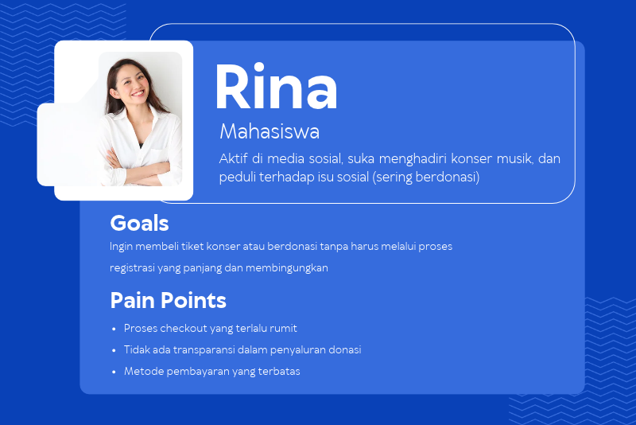
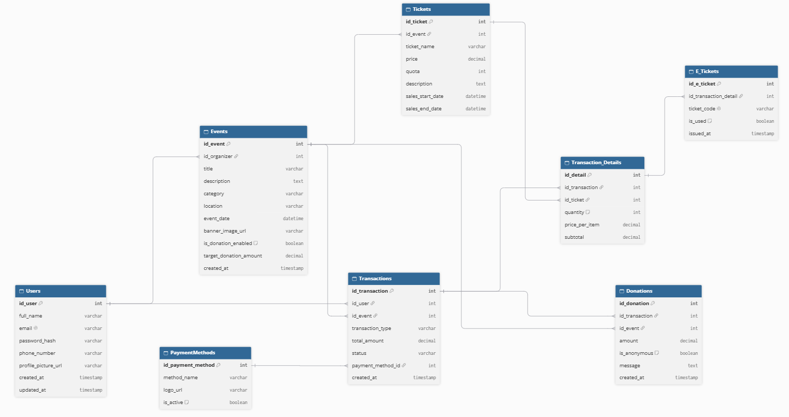
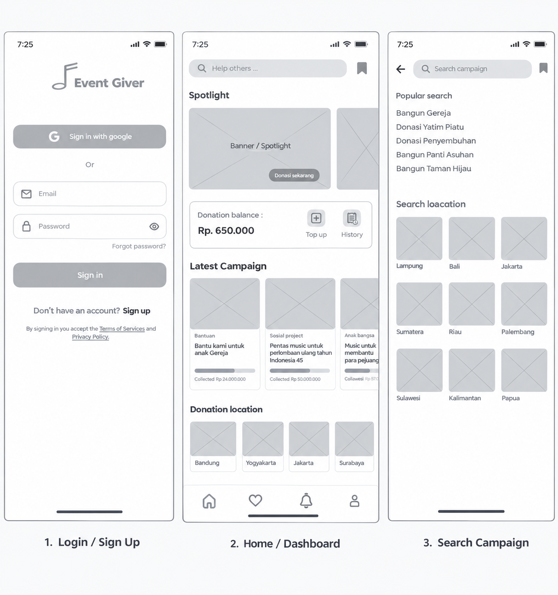
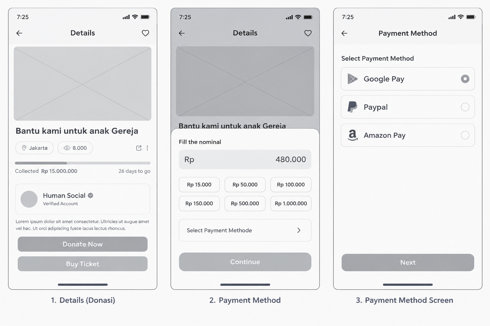
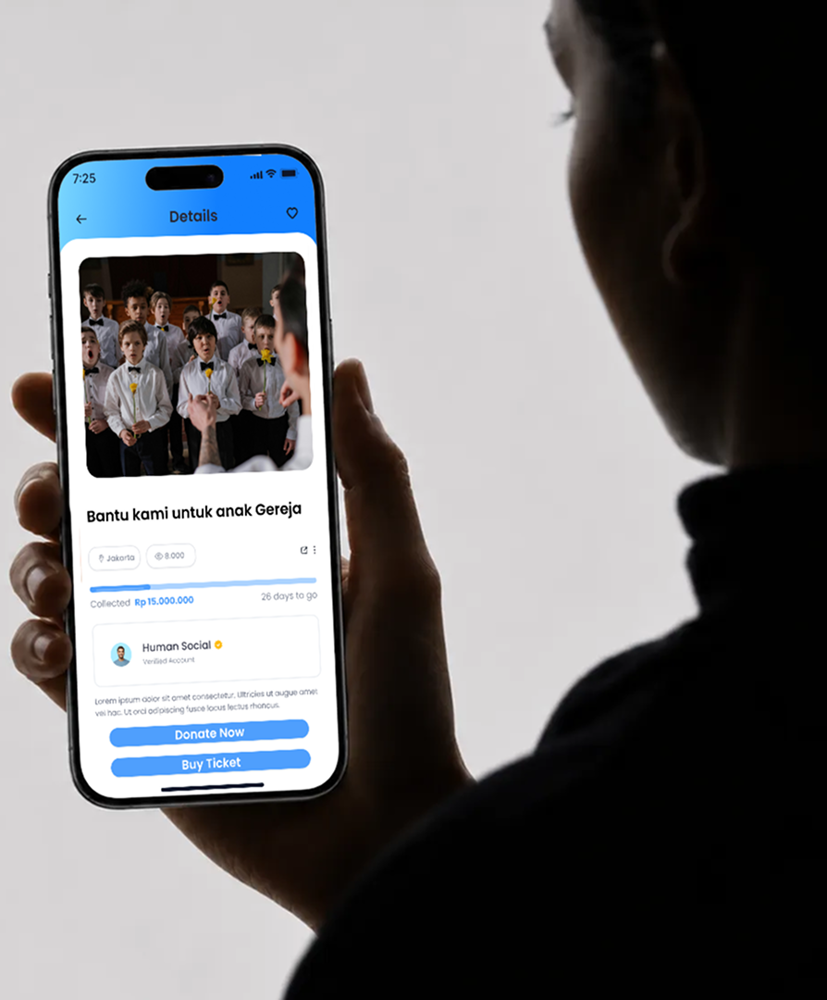
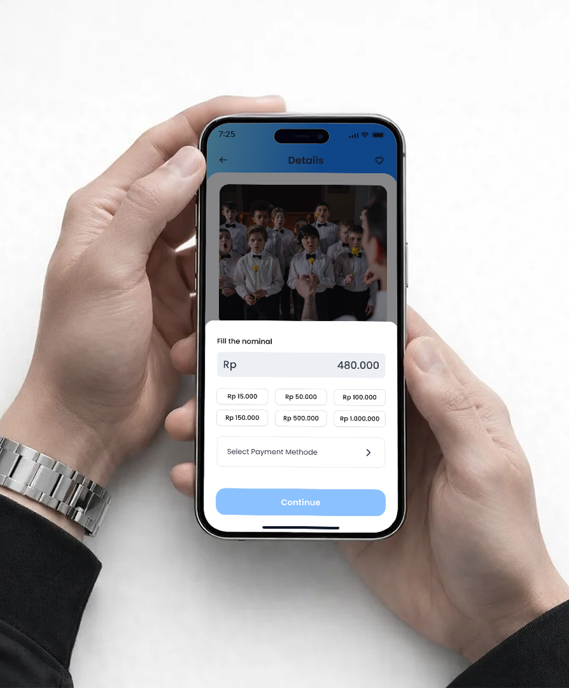
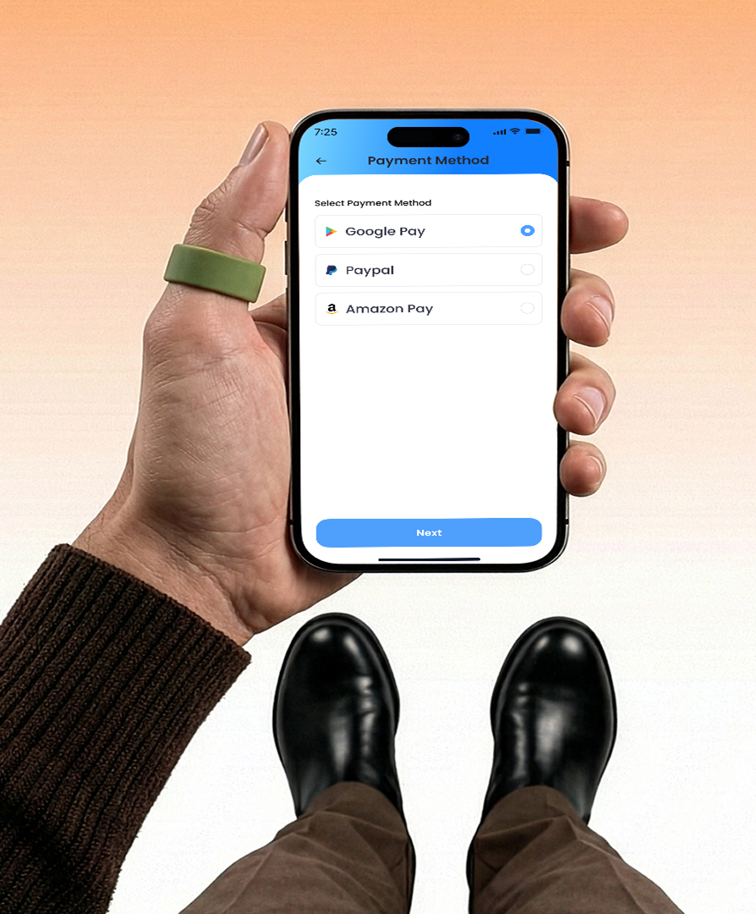

Konteks: Proyek ini merupakan technical test untuk posisi UI/UX Designer. Saya ditantang untuk merancang aplikasi mobile Event Giver sebuah platform one-stop solution yang tidak hanya menjual tiket untuk event musik, tetapi juga mewadahi event sosial dan amal.
Masalah: Pengguna seringkali merasa repot karena harus berpindah-pindah aplikasi hanya untuk membeli tiket konser, lalu pindah ke aplikasi lain untuk berdonasi ke acara amal. Selain itu, proses donasi konvensional seringkali terasa kaku dan kurang transparan. Pengguna membutuhkan aplikasi yang dapat menangani pembelian tiket dan donasi dalam satu alur yang mulus (seamless) dengan antarmuka yang ramah pengguna.
Tujuan: Merancang antarmuka aplikasi yang intuitif, di mana pengguna dapat dengan mudah menemukan event (musik/amal), melakukan pembayaran tiket, dan berdonasi dengan cepat, hanya dalam hitungan detik.
Saya melakukan wawancara dengan 1 orang mahasiswa dan pekerja muda yang sering menghadiri berbagai acara. Dari riset ini, saya membuat User Persona:

Konsep Relasi Utama
1. Users memiliki banyak Transactions.
2. Events memiliki banyak Tickets (untuk event musik) dan bisa menerima Donations (untuk event amal).
3. Transactions adalah parent dari detail pembelian (bisa berupa tiket atau donasi).
4. Payment Methods digunakan oleh Transactions.

# Sign In: Proses masuk yang cepat (mendukung Sign in with Google)
# Home & Search: Halaman utama yang menampilkan highlight event, serta fitur pencarian dengan hasil visual (gambar event) agar pengguna cepat mengenali event yang dicari

# Detail Campaign (Donasi & Tiket): Halaman di mana pengguna bisa melihat informasi event, memilih nominal donasi (dengan pilihan cepat seperti Rp 15.000, Rp 50.000, dll), atau membeli tiket
# Payment Gateway: Halaman pembayaran yang terintegrasi dengan berbagai metode (Google Pay, PayPal, dll)

Pendekatan Visual (UI): Desain akhir menggunakan palet warna biru muda dan putih untuk menciptakan kesan trustworthy (dapat dipercaya) dan bersih. Tipografi yang digunakan adalah sans-serif yang ramah dan mudah dibaca. Ikon-ikon dibuat dengan gaya outline (garis) yang modern.



# Split Action Button: Pada halaman detail, pengguna disajikan dua opsi tombol yang jelas: "Donate Now" (Donasi) dan "Buy Ticket" (Beli Tiket). Ini memudahkan pengguna yang hanya ingin berdonasi tanpa harus membeli tiket.
# Quick Nominal Selection: Pada halaman donasi, saya menyediakan tombol nominal cepat (Rp 15.000, Rp 50.000, dll) sehingga pengguna tidak perlu mengetik manual, mempercepat proses donasi.
# Integrated Payment Method: Halaman pembayaran menampilkan opsi pembayaran populer dengan ikon yang jelas, mengurangi keraguan pengguna saat checkout.
Hasil:Desain aplikasi Event Giver berhasil menyatukan dua kebutuhan berbeda (hiburan dan sosial) dalam satu antarmuka yang kohesif. Antarmuka yang minimalis dan dominan warna terang membuat aplikasi terasa ringan dan mudah digunakan
Pembelajaran (Learning): Melalui proyek ini, saya belajar bahwa Visual Hierarchy sangat penting dalam aplikasi multi-fungsi. Menempatkan tombol "Donasi" dan "Beli Tiket" secara berdampingan (seperti pada desain saya) membutuhkan pertimbangan agar pengguna tidak bingung. Saya juga belajar bahwa pemilihan warna yang tepat (biru muda) sangat efektif untuk membangun kepercayaan (trust) pada aplikasi yang berhubungan dengan uang dan donasi